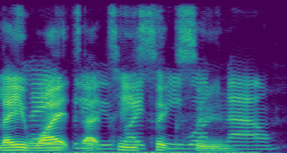
pesq1.069
sdr-10.13
stoi0.559
Listening demo
Each row is one recorded sentence mixed with a second talker from the same corpus, at a fixed signal-to-noise ratio, from −10 dB up to +10 dB. Reading left to right: what the network hears, what an audio-only network recovers from it, what the audio-visual system recovers when it can also watch the target speaker's mouth, and the clean recording underneath.

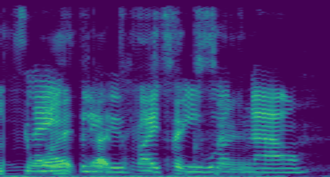
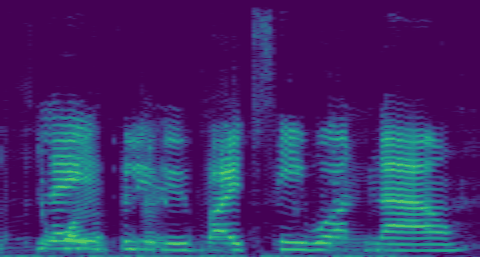
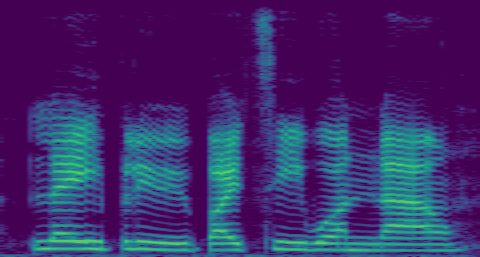
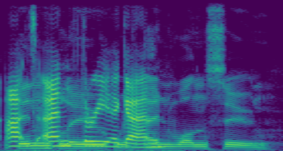
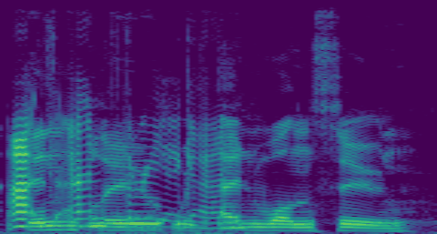
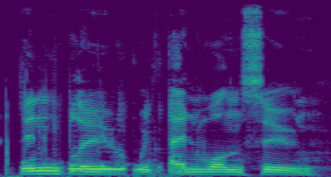
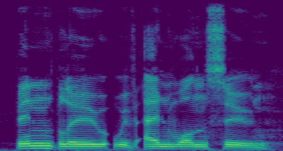
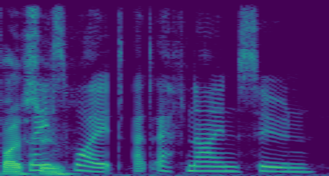
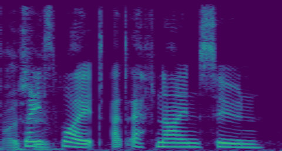
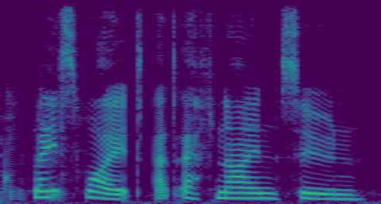
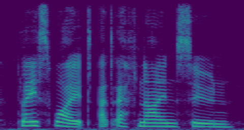
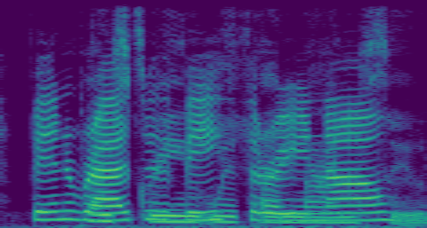
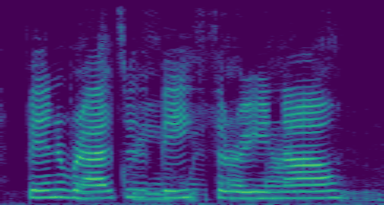
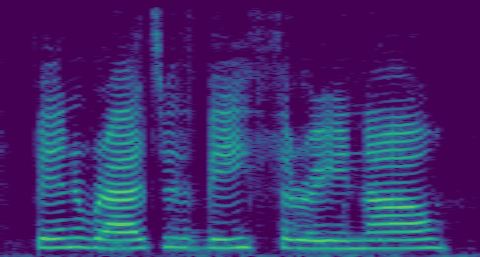
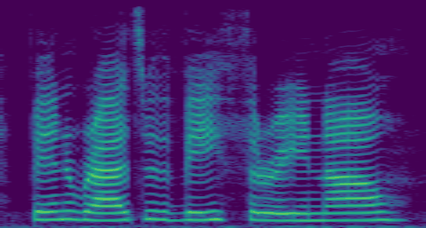
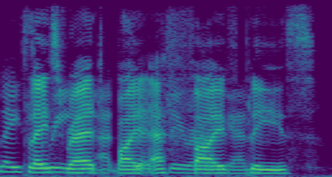
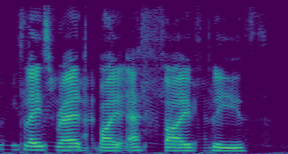
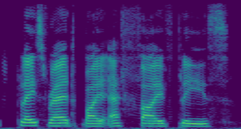
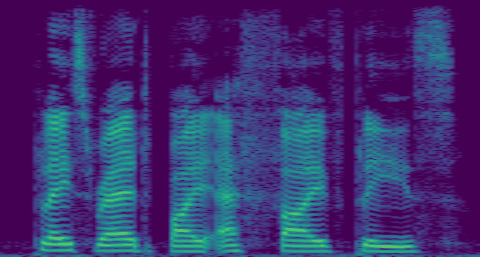
Each spectrogram spans 0–8 kHz vertically and the full utterance horizontally. The video in the input column carries that row's mixture audio. Scores are computed against the clean target of the same row; SDR is scale-invariant, so the clean reference has none.
Source material: Lombard GRID (Alghamdi, Maddock, Marxer, Barker & Brown, JASA 143, EL523, 2018), CC BY 4.0. Audio re-encoded to 16-bit PCM and additively mixed; video cropped to the lip region and resized.